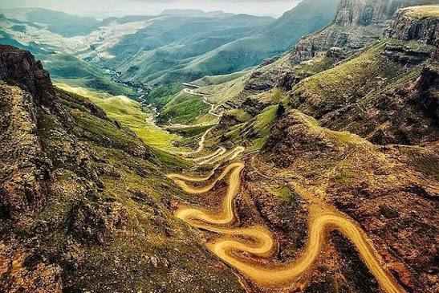

01 / HIGHLAND SCENERY
Maloti Mountains & Sani Pass
Navigate winding 4x4 mountain passes, view panoramic escarpment vistas from 2,876 metres, and gaze at snow-dusted summits in winter.
Explore destinations →